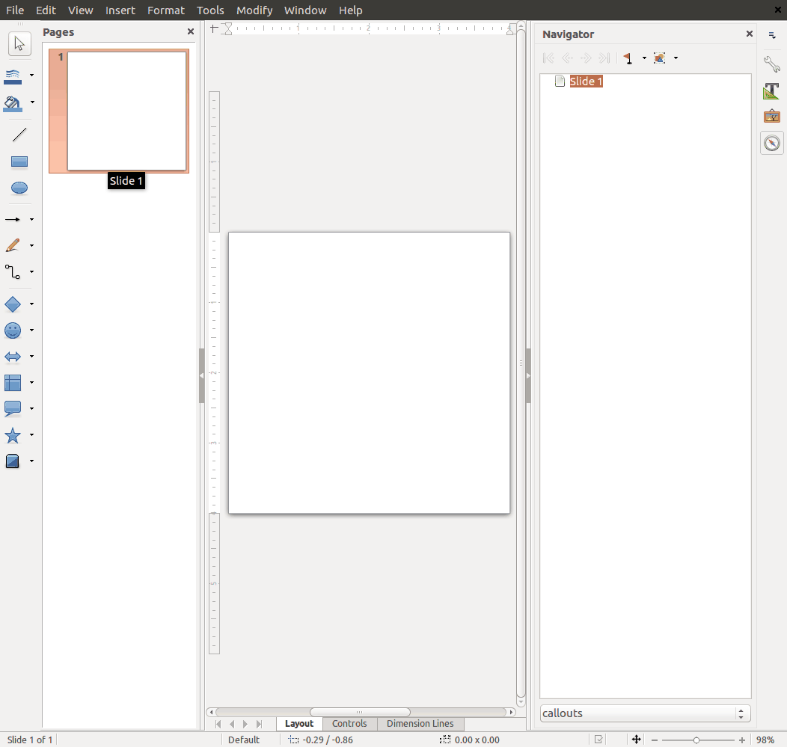

This guide is intended for parties interested in contributing to this documentation.
What is it about?
This guide describes a recommended workflow and required conventions to be used
when creating content.
Workflow
Setup Environment
While the online editor may be used, the most efficient way to create
documentation is to install the GitBook Toolchain locally. See
https://toolchain.gitbook.com/ for detailed instructions. The short version
follows.
The following is required:
NodeJS (v4.0.0 and above is recommended)
git
A Markdown editor/IDE (ATOM is a good open source choice)
Clone the forked repository with git clone <your fork's url> and create a
branch with git checkout -b some-branch-name.
As you make commits, reference the issue number, if any, in your commit message, such as
git commit -m "added information on important subject (#62)"
Once you're at the point that you'd like feedback, submit a Pull Request (new
Pull Request button). Choose master for the base and your branch name for compare,
then submit it!
Your PR will be reviewed by another contributor, and then either merged or have
changes requested.
Style Guide
This section covers styling conventions required for this documentations. Some of
the conventions rely on plug-ins that enhance the native GitBook Markdown functionality.
In some instances, the effects of the plugins are not displayed until after the
book has been generated.
Headings
Please use headings to define page sections. Heading levels should appear
sequentially without gaps (don't skip heading levels). Headings should start at
Level 1 for the page title. Headings should not be used purely to define font
styles - if absolutely necessary, use CSS for that. Following this convention
will make it possible to parse the markdown programmatically, e.g. to
dynamically create a table of contents.
Lists
Ordered lists
Ordered lists are processed irrespective of the actual number assigned to each list item.
For Example:
1. first
2. second
3. third
first
second
third
is rendered the same as:
1. first
12. twelfth
30. thirtieth
first
twelfth
thirtieth
Therefore, one recommended convention is to use 1. for every item in an ordered
list. This makes it easier to insert or remove items from the list, at the
expense of slightly less readable Markdown. If you choose to sequentially order
the list items, you must make sure the numbers are sequential to avoid confusion.
List headings
Headings may be use in lists. However, special handling is required to ensure
bullets for ordered lists are styled appropriately.
The tasks tag is available for styling "task lists". For simplicity, all of the various heading levels are styled the same.
Example without task tag
1. ## Level 2
1. ### Level 3
1. ###### Level 6
Example without task tag
Level 2
Level 3
Level 6
Example with task tag
<!-- tasks -->
1. ## Level 2
1. ### Level 3
1. ###### Level 6
<!-- endtasks -->
Example with task tag
Level 2
Level 3
Level 6
Icons
FontAwesome icons are available. Use an
<i> tag to render the chosen icon.
Bootstrap 3 style buttons are supported. Use a <span> tag since these are
for documentation only. Icons may be combined with buttons.
DefaultPrimary SuccessInfo Extra - SmallWarning - SmallDanger - LargeLink
<!-- Standard button --><spanclass="btn btn-default">Default</span><!-- Provides extra visual weight and identifies the primary action in a set of buttons --><spanclass="btn btn-primary">Primary</span><!-- Indicates a successful or positive action --><spanclass="btn btn-success"><iclass="fa fa-check"></i> Success</span><!-- Contextual button for informational alert messages --><spanclass="btn btn-info btn-xs">Info Extra - Small</span><!-- Indicates caution should be taken with this action --><spanclass="btn btn-warning btn-sm">Warning - Small</span><!-- Indicates a dangerous or potentially negative action --><spanclass="btn btn-danger btn-lg">Danger - Large</span><!-- Deemphasize a button by making it look like a link while maintaining button behavior --><spanclass="btn btn-link">Link</span>
Hints
Styled hint blocks are supported.
{% hint style='info' %}
Important info: this note needs to be highlighted
{% endhint %}
There are five supported variations.
info (default)
tip
danger
working
plain
Info: this note needs to be highlighted.
Tip: 20% is customary.
Danger: this is going to blow up!
Working: for the man every night and day...
Plain: booooooorrrrring.
User Interface Elements
The following classes may be used to highlight text that refers to elements of
the user interface:
basic screenshots have no annotation or markup applied
annotated screenshots have markup applied, e.g. callouts, highlights, etc.
Requirements for all screenshots
Minimum 1200px wide
Must include a caption
PNG format
Generally browser window captures should only contain minimum user interface
controls, without navigation toolbar, tab bar, bookmarks toolbar, or status
bar. See Bookmarlet for Screenshots.
Image 1: Example browser screenshot.
Images should be stored in the assets directory corresponding to the
section in which the image appears. Exceptions to this requirement are made
for images used in multiple sections.
Image sizes should be as small as possible without sacrificing quality.
Usually significant size reduction can be achieved by color-type or bit-depth
reduction. pngcrush is a good tool for this.
Requirements for annotated screenshots
Use LibreOffice Draw to create the annotations
A template is available here /assets/documentation-guide/callouts-template.odg
Each screenshot should be placed on a new page
Whenever possible place annotations in callouts outside of the image or in a way that does not cover user interface elements
Export only the image by
selecting all content on the LibreOffice Draw page using cntl-A
choose 'Export ...' from the file menu
select 'PNG' from the 'Format' drop-down selection list
check the 'Selection' box on the Export window
click the 'Save' button
set the pixels width to 1200
choose a compression level of 6
click the 'OK' button
All annotated screenshots for a section should be stored on separate pages in a single .odg file.
Save the LibreOffice Draw file (.odg) in the same directory as the screenshots
Image 2: Creating screenshots using LibreOffice Draw
Screenshot captions
To apply a caption to a screenshot use this syntax in the Markdown.
Applying the {caption} to a image will also indent the image from the surrounding text.
Bookmarlet for Screenshots
Use this bookmarlet: Plain Window. Drag the link to your bookmarks bar or create a bookmark with the code below. Clicking the bookmark will open the current webpage in a plain window that is 1200px wide. Re-size to needed height and take a screenshot. More about bookmarlets here: https://www.wikipedia.org/wiki/Bookmarklet.